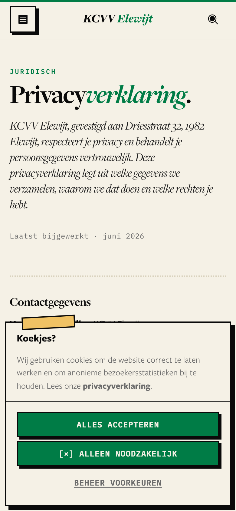
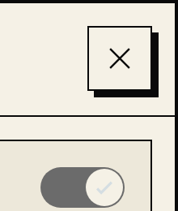
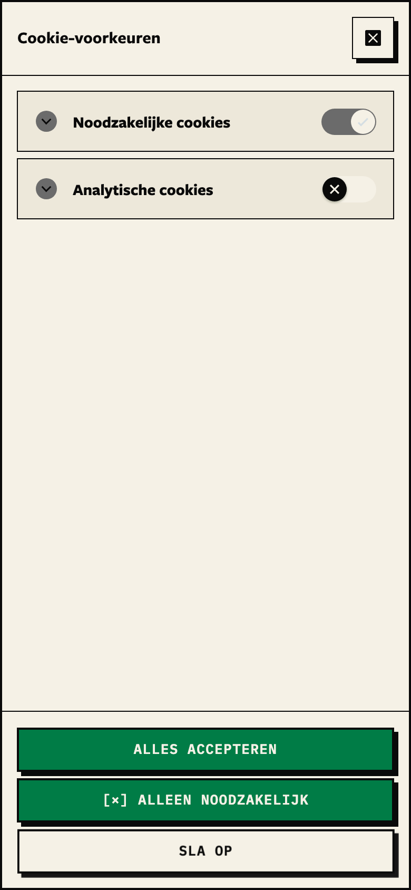
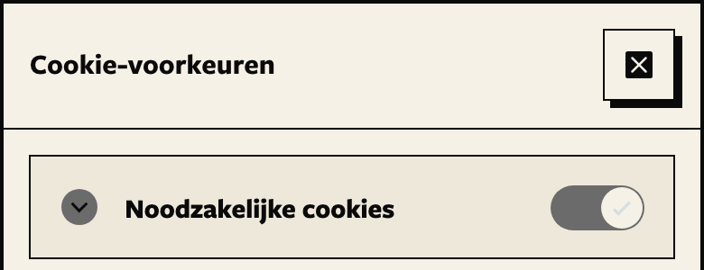
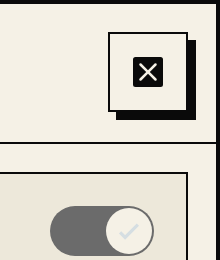
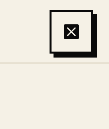
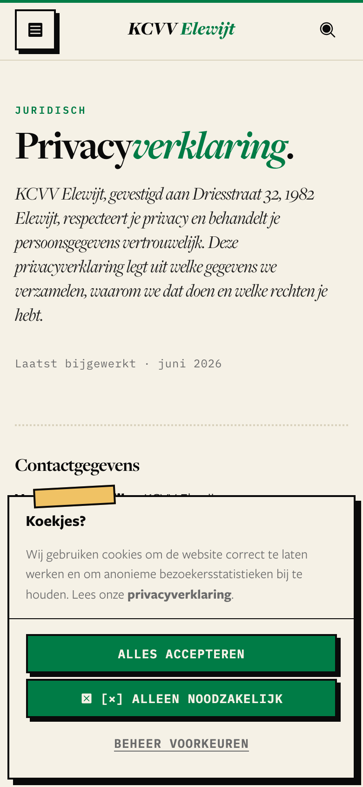
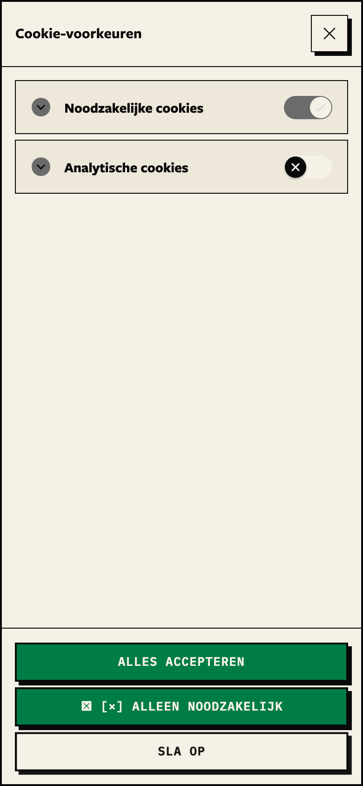
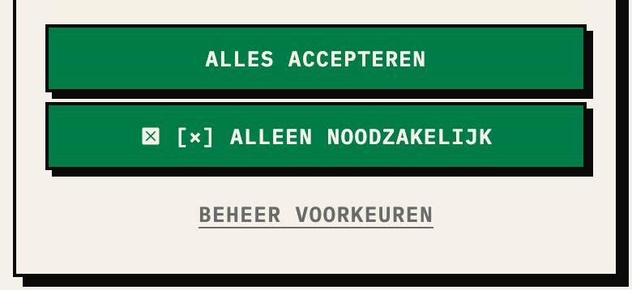

Decided 2026-09-21: A.
Live site, real fonts, iPhone-width screenshots. Only one control is in question: [×] ALLEEN NOODZAKELIJK. Found while checking: the preferences screen already has a cross (top right) — the library's thin one, not ours. Every other close on the site (menu, search, alert, organigram) uses our filled X.
[×] ALLEEN NOODZAKELIJK
first banner
Beheer voorkeuren

the library's close — off-system
first banner (unchanged)

Beheer voorkeuren

as built — real library, local dev, 2026-09-21

cookie close (new)

menu close (live today)
☒ [×] ALLEEN NOODZAKELIJK
first banner

Beheer voorkeuren

the button up close